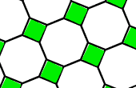
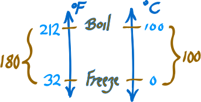
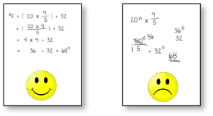

Learning Mathematics
Why Learn Mathematics?
Technology is everywhere around us, and you need mathematics to master it!
In fact most top-paying jobs need good math skills:
|

And Mathematics is not just numbers, it is about patterns, too!
So jobs like fashion and interior design benefit from math skills.
Mathematics is also useful in everyday life:
- Investing money (interest rates, profits, etc)
- Estimating costs
- Shopping (is it really a bargain?)
- Understanding Computers
- Designing rooms and gardens
- Planning trips
Mathematics also improves our mental ability as it teaches us logical ways of thinking.
And anyway, it is just plain fun: what other subject is about solving puzzles?
How to Be an Expert
There are two major steps:
Get the information ... read, listen to a teacher, watch a video. Use the information ... sketch it, think about it, answer questions. |
Using it is so important! Answering questions helps you organize the ideas in your mind*.
Try to do about 1 hour of practice on your own each day*
How to Read Mathematics
Mathematics says a lot in a short space.
Example, in English: "We don't know what staplers or trays cost, but we do know that the office manager bought 15 staplers and 11 trays for a total cost of $73"
But in Mathematics: 15s + 11t = 73
So it is good to re-read, go back and forth and play with the ideas.
 |
| Reading Mathematics is different than reading English |
Read it, think about it, read again, write it down or sketch it out, and then use it (by answering questions), that all helps to get the ideas into your mind.
Example: Converting Celsius to Fahrenheit
°F = (°C × 9/5) + 32
- Read it once first to see there is °F (which means Fahrenheit) on one side, and °C (Celsius) on the other side, with some calculations.
- Now go over it again and see that °C is multiplied by 9/5 and think "I wonder why that is done? Why 9/5?"
- Then notice that 32 is added ... why is that?
- Maybe you could make a sketch (as shown below)
- Then use it yourself, do a few conversions and see how it works
Make Sketches
It really helps understanding when you sketch what you are learning*. Make large and bold sketches with plenty of labels and notes. Like this sketch about Celsius and Fahrenheit: |
 |
Sketches are also very helpful when doing questions.
Work Neatly
|  |
| Working neatly helps you think more clearly and also gives you good mental habits. |
Have pride in your work, even if nobody else will see it.
Take Your Time!
Math is not about reading pages ... it is about building concepts in your mind.
So don't think "I read 2 pages today", instead think "I understand graphs better now".
It is important to learn about one idea at a time, make sure you understand it, and do plenty of exercises so you become expert.
Important: If you skip past a section, the rest may not make sense.
You will get confused, frustrated, and you will begin to hate the subject.
The cure?
- Go back to where it made sense,
- then move gently forward again,
- do plenty of practical things like solving questions and doing sketches
And you will soon be "back on track"
Practice, Practice, Practice
Do lots of questions.
That is why we developed the Mathematics Question Database.
If you need to pass an exam, find past exams and do them*.
Read a Lot
Get some books, and read them. Spend time on math websites (like this one!), and join a forum (like the Math is Fun Forum).
Come Up With Your Own Ways
You have your own learning style.
Don't just follow the steps you are shown, try your own ideas!
Play with the ideas you are learning.
And try reading about the same subject from different places, you may find some that make a lot more sense to you.
Your mind is an amazing and unique tool, and you want to use it the best way you know how.
And studying mathematics is a good way to improve it!
All About Ideas
It is more important to know the ideas than to remember the formulas.
If you know how things work, you can always re-create the formulas when you need them. And you may also be able to do more clever things with your ideas.
*Bibliography:
- Drawing 'integral' to science learning https://www.nottingham.ac.uk/news/pressreleases/2011/august/drawing-integral-to-science-learning.aspx
- Retrieval Practice Produces More Learning than Elaborative Studying with Concept Mapping (Jeffrey D. Karpicke and Janell R. Blunt) Science 20 January 2011: 1199327
- Testing Improves Memory https://www.psychologicalscience.org/index.php/news/releases/testing-improves-memory.html
- Practice testing protects memory against stress
https://now.tufts.edu/news-releases/practice-testing-protects-memory-against-stress - How Much Math, Science Homework is Too Much?
https://www.apa.org/news/press/releases/2015/03/math-science-homework.aspx - The Worst and The Best Study Tips & Habits based on Psychological Research
https://cognitiontoday.com/2019/04/the-worst-and-the-best-study-tips-habits-from-psychological-research-how-to/ - H. Sigmundsson, R. C. J. Polman, and H. Lorås (2013) Exploring Individual Differences in Children's Mathematical Skills: A Correlational and Dimensional Approach. Psychological Reports: Volume 113, Issue, pp. 23−30. doi: 10.2466/04.10.PR0.113x12z2 https://www.eurekalert.org/pub_releases/2013−12/nuos-nmg121313.php